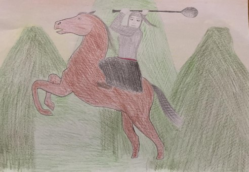

Ben, Ay Huucın… Hakasların “Ay Huucın” adlı destanlarının merkezî kahramanı olup bu destana adımı verdim. Destandaki talî kadın kahraman ise Alıp Han Hıs’tır. Beni Hakas destanlarının diğer kadın kahramanlardan ayıran ana özelliğim, bir aygır ve kısrak soyundan gelmemdir. Adımı taşıyan destandaki kahramanların memleketleri Hanım Nehri kıyısında Hanım Sırt eteğindeki Hızıl kaya etrafındaki kumlu ova bölgesidir.
Destanda yurdumdan ilk ayrılışım, Hara Ninçi ve Pora Ninçi’nin alt dünyaya kaçırdıkları Han Mirgen’in çocuklarını kurtarmak için gittikleri alt dünya yolculuk içindir. Bu gidişten başarıyla döndüm ve Han Mirgen’le ablam Hıs Han’ın takdirini kazandım. Bu, benim ilk kahramanlık mücadelem idi.
Adımı taşıyan destanda başkahramanlardan Han Mirgen ilk alplık sınavını başarıyla yerine getirince ablası Hıs Han’dan evleneceği kızın nerede yaşadığını ve kim olduğunu öğrenir. Bu, Alıp Han Hıs’tır. Onu bulup evlenmek için yurdundan ayrılır. Yurda varır ancak Alıp Han Hıs’a kötü sözlerde bulunan Han Mirgen kızın tepkisini çeker. Kız, Han Mirgen’in üzerine adamlarını gönderir, onlarla kapışan Han Mirgen bunları alt ettikten sonra Alıp Han Hıs ile dövüşür. Bu esnada güçten düşen Han Mirgen’in yardımına boz şahin donunda oraya varan ablası Hıs Han yetişir, onun geldiğini gören Han Mirgen ayaklanır ve kızı alt ettikten sonra ablasından yurtlarının Erlik ve taifesi tarafından talan edildiğini öğrenir ve kızı da alarak yurduna döner. Yurtta benimle karşılaşır ve benim ablasının çocuğu olduğumdan kuşkulanır. Beni takip ederek gerçeği öğrenir ve rahatlar. Han Mirgen yurdunda Alıp Han Hıs ile uzun süren bir düğün kurar ve eğlenir. Ben ikinci kahramanlığımı Han Mirgen’in oğullarından Altın Arığ ile birlikte sergiledim. Altın Arığ ile birlikte zamanlar yine benim tarafımdan öldürülen Alıp Hushun ve Hıyğa Çiçen ile kapıştık. Bu mücadeleye alp Altın Teek de katıldı. Giriştiğimiz bu mücadeleyi biz kazandık ve hep birlikte yeniden obamıza döndük.
Destanın sonunda benim sayemde huzurlu bir hayat sürülmeye başlandı. Benden korkanlar yaşadıkları yeri terk ettiler, benim varlığımı görünmezlere karşı güven olarak görenler yakın yerlere yerleştiler.
